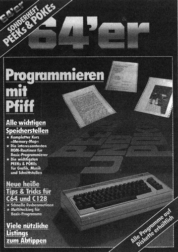

Der Hunger nach Wissen

Es ist schon faszinierend, was man dem C 64 alles entlocken kann. Ich kann mich noch an die Zeit erinnern, als der C 64 auf den Markt kam.
Der Eindruck, den die ersten Anzeigen und Testberichte hinterließen, war überwältigend. Eine völlig neue Dimension tat sich auf: Grafik mit 320 mal 200 Punkten, sagenhafte 64 KByte Speicher, Sprites und umfangreiche Soundmöglichkeiten ließen einem das Wasser im Mund zusammenlaufen. Aber erst der bis dahin unerreicht niedrige Preis von knappen 1500 Mark (der schnell auf 1300 Mark abrutschte) ließ die innere Kaufhürde schmelzen. Als der C 64 dann auf dem Tisch stand, begann jedoch schon das Dilemma. Das Basic V2.0 war erschreckend spartanisch. Keine Befehle für Grafik, keine für Musik. Das Handbuch half zwar über die ersten Hürden, warf dann jedoch mehr Fragen auf als Antworten zu geben. Software gab es kaum, und die angebotenen Programme waren zu teuer.
Das war die Zeit der vielen Fragen und wenigen Antworten. Die ersten großen Entdeckungsreisen durch den C 64 begannen. Mit einer vorher kaum vorstellbaren Energie und Ausdauer wurde probiert, getüftelt und experimentiert. Fiel während eines Bummels durch ein Kaufhaus das Wort »C 64« oder »Commodore«, wurden die Ohren zu hochsensiblen Empfangsantennen mit kolossaler Richtwirkung. Jede noch so geringe Information wurde aufgesogen, wie wenn ein Ertrinkender nach Luft schnappt. Die Hoffnung auf eine neue POKE- oder PEEK-Adresse ersetzte glatt ein Mittagessen und machte die Nacht zum Tage.
Das war die Zeit des Fiebers nach Informationen. Es gab am Anfang ja noch nichts. Kein 64'er-Magazin, keine Literatur. So war es überhaupt kein Wunder, daß das erste Buch zum C 64 ein Renner wurde. »C 64 – Intern« war wie eine Offenbarung. Zum erstenmal konnte der große Hunger gestillt werden.
Das war die Zeit, in der man sich zurückzog, las, bis einem die Augen tränten.
Der C 64 wurde innerhalb kürzester Zeit zum Verkaufsrenner. Nach und nach gab es auch mehr Literatur. Die Computer-Zeitschriften reservierten immer mehr Platz für den C 64. Kurz nachdem er zum meistverkauften Heimcomputer Deutschlands wurde, kam das 64'er-Magazin. Leser die den C 64 schon länger kannten, gaben alles was sie wußten. Sie schrieben Grundlagenartikel, Testberichte, Kurse. Endlich bekam man jeden Monat knallharte Informationen. Von Profis für Anfänger, Fortgeschrittene und Kenner. Jetzt begann die Zeit, in der man aus dem Vollen schöpfen konnte.
Vor allem die Kurse waren und sind so beliebt, daß für viele Leser lange Zeit kein Ende in Sicht war, zum Beispiel der Assembler-Kurs oder die Memory-Map. Einen Nachteil hat das Ganze aber. Sucht man eine bestimmte Information, müssen, wie zum Beispiel bei der Memory-Map, bis zu 18 64'er-Ausgaben durchsucht werden. Hier erfüllen die 64'er-Sonderhefte eine wichtige Funktion. Stoff, der sich über lange Zeit angesammelt hat, kann in einem Sonderheft zusammenhängend veröffentlicht werden. Zusammen mit neuen Listings, hervorragenden Tips & Tricks und vielen Grundlageninformationen wird in jedem Sonderheft ein Schwerpunktthema behandelt.
In diesem Sonderheft finden Sie den kompletten Kurs »Memory-Map mit Wandervorschlägen«, der im 64'er, Ausgabe 11/84 begann und mit Ausgabe 6/86 abgeschlossen wurde. Er behandelt die wichtigsten Speicherzellen (Adressen) des C 64 und VC 20, erklärt deren Funktion und fordert anhand vieler Beispiele zum Mitmachen auf. Die ersten tausend Byte des C 64 kann man getrost als sein Kurzzeitgedächtnis bezeichnen. Mit dem Wissen über die Wirkung dieser Zellen lernen Sie nicht nur den Computer besser verstehen, sondern sind auch in der Lage, ihn zu beherrschen. Die »Memory-Map mit Wandervorschlägen« ist ein umfangreiches Nachschlagewerk, geschrieben für Einsteiger, Fortgeschrittene und Wißbegierige.
C 128-Besitzer bekommen vielleicht einige Probleme, weil nicht alle in der Memory-Map beschriebenen Adressen für den C 128 gelten. Deshalb gibt es einen eigenen Artikel, in dem die Unterschiede zum C 64 erklärt und beschrieben werden. Wer sich mit Maschinensprache beschäftigt, ist noch mehr auf die Erklärung der verschiedenen Speicherstellen angewiesen als der Basic-Programmierer. Als Assemblerprogrammierer arbeitet man sozusagen nur mit »PEEKs & POKEs«. Aus diesem Grund haben wir einen Leckerbissen für ihn parat: Ausführlich und leicht verständlich wird erklärt, wie Zahlen und Zeichen ein- und ausgegeben werden, wie man mit ihnen rechnet, in andere Formate umwandelt, etc. Mathematik in Assembler ist kein leichtes Thema. Aber mit den Betriebssystemroutinen des C 64 und einer guten Übersicht wird sie zum Kinderspiel. Doch auch überzeugte Basic-Programmierer können Systemroutinen benutzen und vorteilhaft anwenden. Was Sie beachten müssen, welche Tricks Sie kennen sollten, verrät Ihnen ein eigener Artikel. Natürlich finden Sie zusätzlich wieder viele Listings zum Abtippen und vor allem jede Menge PEEKs & POKEs und kurze und interessante Tips & Tricks.
Betrachtet man die heutige Situation und vergleicht sie mit der damaligen, oben geschilderten, so hat sich nur eines geändert: die verfügbare Information. Geblieben ist der Hunger nach Wissen, Grundlagen und Programmen. Und von daher kann ich jeden neuen C 64-Besitzer nur beneiden.
(Georg Klinge)